Optogenetics: Using Light to Excite the Brain
Optogenetics
Neuroscience
A curious and motivated Biomedical ing undergraduate with a love for mathematics, problem-solving, and understanding the human body. Passionate about combining mathematics, physics, and electronics to explore physiological signals, medical instrumentation, and develop innovative healthcare solutions.
I have always enjoyed mathematics and solving problems. When I was younger, I was also curious about how the human body works and what happens inside it. Initially, I thought about studying physical sciences because of my love for mathematics. However, when I entered university, I discovered Biomedical ing, a field that brings together both of my interests.
I chose this path because it allows me to understand the human body through science while using mathematics, physics, and electronics to solve real-world healthcare problems. I am particularly interested in medical instrumentation, physiological signal processing, and understanding how signals from the human body can be used to develop better healthcare technologies. I am always eager to learn new things, explore ideas, and turn what I learn into something meaningful.
During my undergraduate studies, I have gained hands-on experience with a range of technologies, including Python, C++, MATLAB, LTspice, SolidWorks, Altium Designer, Arduino, ESP32, Raspberry Pi, STM32, and Atmel Studio. I have also worked with machine learning and IoT tools such as PyTorch, TensorFlow, TensorFlow Lite, ThingSpeak, and Node-RED.
I am passionate about solving real-world problems that shape the future of healthcare.
I am looking for opportunities that combine my skills in Biomedical ing with challenging work, professional development, and personal growth.
Jaffna, Sri Lanka
Qualification: G.C.E. Ordinary Level
Results: 9 A Grades (English Medium)
Year: 2018
Qualification: G.C.E. Advanced Level
Results: 3 A Grades (Mathematics, Physics, Chemistry - English Medium)
Year: 2021
Notable Achievements:
Moratuwa, Sri Lanka
Degree: Bachelor of Biomedical Engineering
CGPA: 3.85/4.0
Dean's List: Semesters 1, 2, 3, 5 and 6
Relevant Coursework:
Mathematics and Data Structures
Electronics and Signals
Biomedical and General Engineering
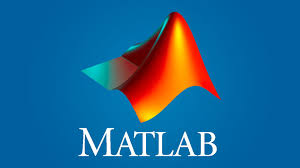
MATLAB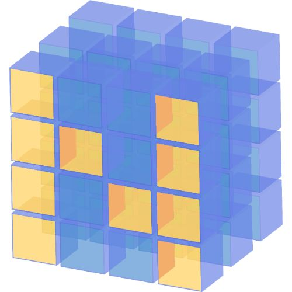
NumPy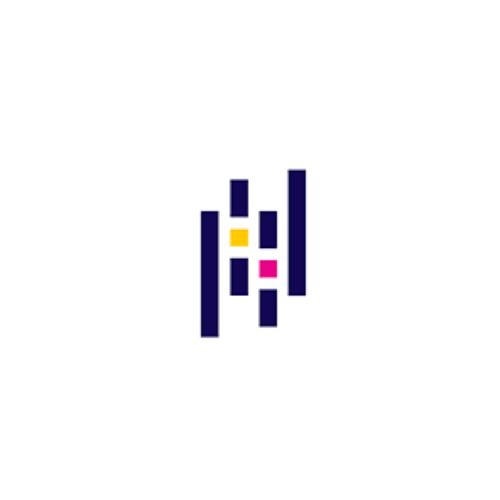
Pandas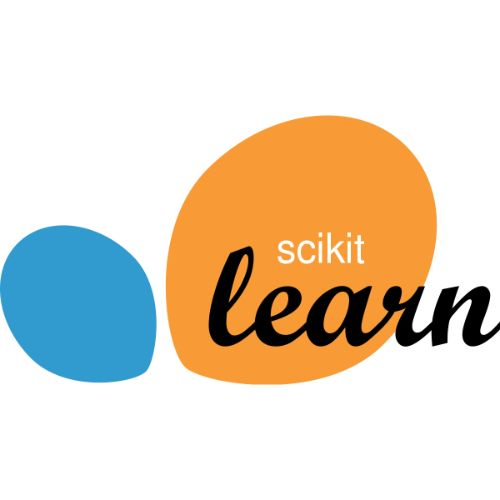
scikit-learn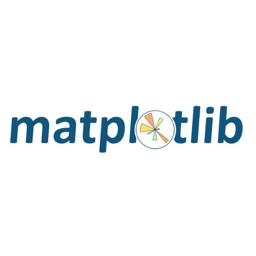
Matplotlib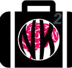
NeuroKit2 Google Colab
Google Colab
 Overleaf
Overleaf
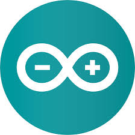
Arduino Raspberry Pi
Raspberry Pi
 Atmel Studio
Atmel Studio
 Altium
Altium
 SolidWorks
SolidWorks
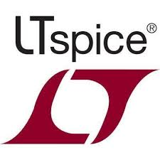
LTspice Node-RED
Node-RED

Real-Time ECG and PPG Monitor
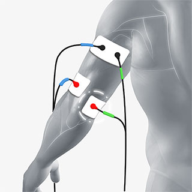
Analog Filter for EMG with a Mini Web-Based Oscilloscope
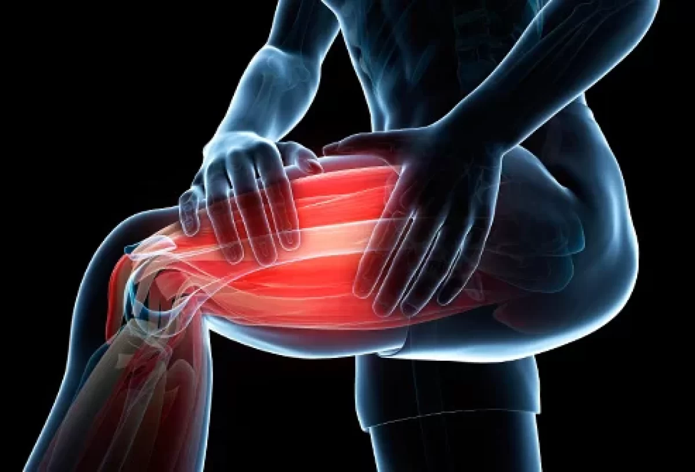
Non-Invasive Muscle Cramp Detection System Using Physiological Sensors

Designed and implemented an IoT-based MediBox for remote health monitoring using ESP32 and Node-RED.

Developed a real-time vein detection system using an ESP32-CAM with IR illumination and wireless video streaming.

Skin disease detection using MobileNet, optimized for real-time edge deployment on Raspberry Pi.
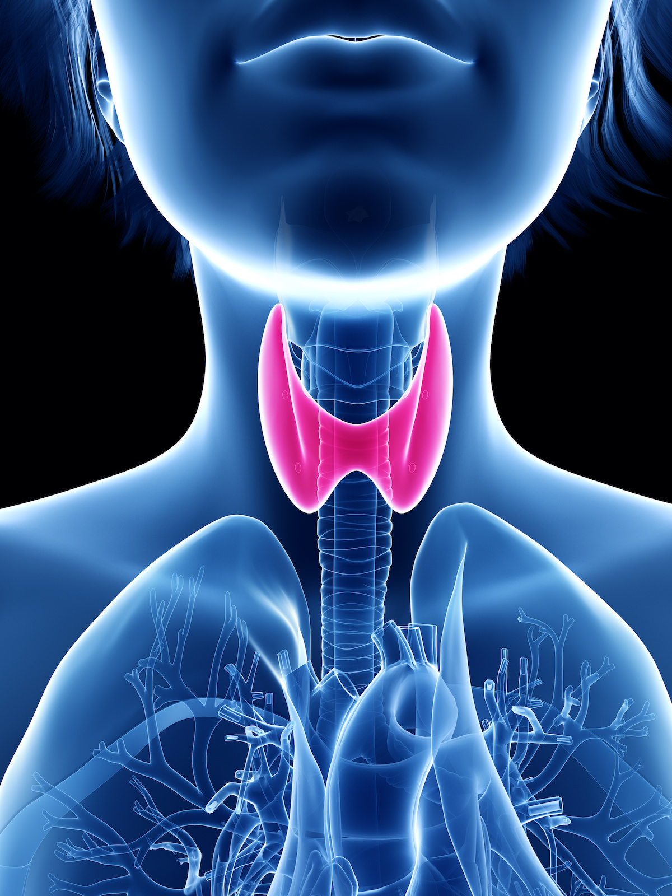
Thyroid disease prediction using logistic regression with 97% accuracy.
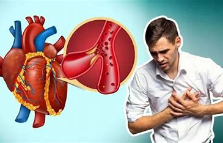
I'm happy to talk about research, projects, or collaboration in biomedical engineering. Feel free to reach out any time.